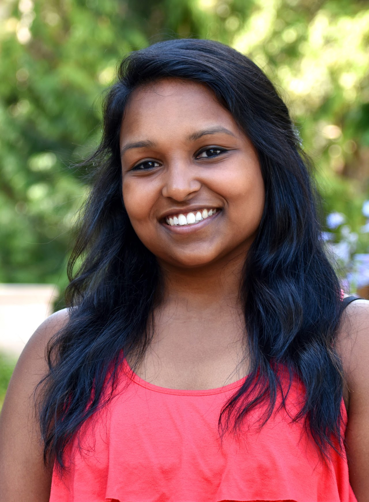

Reinforcement Learning for Real Life
About the workshop
Reinforcement learning (RL) is a general learning, predicting, and decision making paradigm that applies broadly in science, engineering and arts. RL has seen prominent successes in many problems, such as Atari games, AlphaGo, robotics, recommender systems, and AutoML. However, applying RL in the real world remains challenging, so a natural question is:
Schedule
- Atlantic run: San Francisco 9am–12pm, June 27 · Pacific run: SF 6–9pm, June 27
- 0:00-1:00Live panel discussion / Q&A
- 1:00-3:00Online poster sessions
Panels
We will request invited speakers and moderators to share their expertise w.r.t. the real life aspects of RL by pre-recording videos. The moderators will host a live panel discussion at the listed times, and there will be polls for audience members to submit their questions during these live panel discussions.


Accepted papers
- Deterministic Policy Gradient with Multi-Objective RewardsXu Chen, Yali Du, Jun Wang
- Multi Type Mean Field Reinforcement LearningSriram Ganapathi Subramanian, Pascal Poupart, Matthew E. Taylor, and Nidhi Hegde
- Reinforcement Learning for Personalization: A Systematic Literature ReviewFloris den Hengst, Eoin Martino Grua, Ali el Hassouni, and Mark Hoogendoorn
- Sample Efficient Policy Gradient Methods with Recursive Variance ReductionPan Xu, Felicia Gao, Quanquan Gu
- Automated Optical Multi-Layer Design via Deep Reinforcement LearningHaozhu Wang, Zeyu Zheng, Chengang Ji, L. Jay Guo
- BADGR: An Autonomous Self-Supervised Learning-Based Navigation SystemGregory Kahn, Pieter Abbeel, Sergey Levine
- Expert-Supervised Reinforcement Learning for Offline Policy Learning and EvaluationAaron Sonabend, Junwei Lu, Leo A. Celi, Tianxi Cai, Peter Szolovits
- Model-Based Meta-Reinforcement Learning for Flight with Suspended PayloadsSuneel Belkhale, Rachel Li, Gregory Kahn, Rowan McAllister, Roberto Calandra, Sergey Levine
- Neural Dynamic Policies for End-to-End Sensorimotor LearningShikhar Bahl, Mustafa Mukadam, Abhinav Gupta, Deepak Pathak
- Neural Approximate Dynamic Programming for On-Demand Ride-PoolingSanket Shah, Meghna Lowalekar, Pradeep Varakantham
- Advancing Renewable Electricity Consumption With Reinforcement LearningFilip Tolovski
- D4RL: Datasets for Deep Data-Driven Reinforcement LearningJustin Fu, Aviral Kumar, Ofir Nachum, George Tucker, Sergey Levine
- AVID: Learning Multi-Stage Tasks via Pixel-Level Translation of Human VideosLaura Smith, Nikita Dhawan, Marvin Zhang, Pieter Abbeel, Sergey Levine
- Value Variance Minimization for Learning Approximate Equilibrium in Stochastic Congestion GamesTanvi Verma, Pradeep Varakantham
- Incentive Based Learning for Improving Effectiveness of Aggregation SystemsTanvi Verma, Pradeep Varakantham
- AgentGraph: Towards Universal Dialogue Management with Structured Deep Reinforcement LearningLu Chen, Zhi Chen, Bowen Tan, Sishan Long, Milica Gasic, Kai Yu
- Planning and Execution using Inaccurate Models with Provable GuaranteesAnirudh Vemula, Yash Oza, J. Andrew Bagnell, Maxim Likhachev
- Enabling Safe Exploration of Action Space in Real--World RobotsShivam Garg, Homayoon Farrahi, A.Rupam Mahmood
- Reward Design for Driver Repositioning Using Multi-Agent Reinforcement LearningZhenyu Shou, Xuan Di
- Sparsity-Agnostic Lasso BanditMin-hwan Oh, Garud Iyengar, Assaf Zeevi
- Variance Reduction for Evolutionary Strategies via Structured Control VariateYunhao Tang, Krzysztof Choromanski, Alp Kucukelbir
- Reinforcement Learning for Integer Programming: Learning to CutYunhao Tang, Shipra Agrawal, Yuri Faenza
- Delay-Correcting Reinforcement LearningYann Bouteiller*, Simon Ramstedt*, Giovanni Beltrame, Christopher Pal, Jonathan Binas
- Long-Horizon Visual Planning with Goal-Conditioned Hierarchical PredictorsKarl Pertsch*, Oleh Rybkin*, Frederik Ebert, Chelsea Finn, Dinesh Jayaraman, Sergey Levine
- Treatment Effect Information Transfer from Well Curated to Less Resourced Populations with HIVSonali Parbhoo, Mario Wieser, Volker Roth, Finale Doshi-Velez
- Visual Transfer for Reinforcement Learning via Wasserstein Domain ConfusionJosh Roy, George Konidaris
- Learning to Dock RobustlyMohamed Elsayed, Hager Radi, A. Rupam Mahmood
- Efficient Adaptation for End-to-End Vision-Based Robotic ManipulationRyan Julian, Benjamin Swanson, Gaurav Sukhatme, Sergey Levine, Chelsea Finn, Karol Hausman
- An Empirical Investigation of the Challenges of Real World Reinforcement LearningGabriel Dulac-Arnold, Nir Levine, Daniel J. Mankowitz, Cosmin Paduraru, Sven Gowal, Jerry Li, Todd Hester
- Student-teacher curriculum learning via reinforcement learning: Inpatient Hospital Admission PredictionRasheed el-Bouri, David Eyre, Peter Watkinson, Tingting Zhu, David Clifton
- Conservative Q-learning for Offline Reinforcement LearningAviral Kumar, Aurick Zhou, George Tucker, Sergey Levine
- Latent State Models for Meta-Reinforcement LearningAnusha Nagabandi*, Tony Zhao*, Kate Rakelly*, Chelsea Finn, Sergey Levine
- RL Unplugged: Benchmarks for Offline Reinforcement LearningCaglar Gulcehre*, Ziyu Wang*, Alexander Novikov*, Tom Le Paine*, Sergio Gómez Colmenarejo, Konrad Zolna, Rishabh Agarwal, Josh Merel, Daniel Mankowitz, Cosmin Paduraru, Gabriel Dulac-Arnold, Jerry Li, Mohammad Norouzi, Matt Hoffman, Ofir Nachum, George Tucker, Nicolas Heess and Nando de Freitas
- Intrinsic Reward Driven Imitation Learning via Generative ModelXingrui Yu, Yueming Lyu and Ivor W. Tsang
- Learning to Run a Power Network: bringing AI to power grid controlBenjamin Donnot, Antoine Marot, Isabelle Guyon
- Automation of the Fresh Food Supply Chain Using Model-Based PlanningHarlan Seymour, Andy Chen, Philip Cerles, Sawyer Birnbaum, Siddarth Sampangi, Danny Nemer, Volodymyr Kuleshov
- Interpretable Off-Policy Evaluation in Reinforcement Learning by Highlighting Influential TransitionsOmer Gottesman, Joseph Futoma, Yao Liu, Sonali Parbhoo, Leo Anthony Celi, Emma Brunskill, Finale Doshi-Velez
- Planning to Explore via Self-Supervised World ModelsRamanan Sekar*, Oleh Rybkin*, Kostas Daniilidis, Pieter Abbeel, Danijar Hafner, Deepak Pathak
Call for papers
What are the challenges of applying RL in the real world, and how can we solve them?
The main goals of the conference are to:
(1) identify key research problems that are critical for the success of real-world applications;
(2) report progress on addressing these critical issues; and
(3) have practitioners share their success stories of applying RL to real-world problems, and the insights gained from the applications.
We invite you to submit papers that successfully apply RL algorithms to real-life problems by addressing practically relevant RL issues. Our topics of interest are general, including but not limited to topics below:
Practical RL algorithms, which covers all algorithmic challenges of RL, especially those that directly address challenges faced by real-world applications;
Practical issues: generalization, sample/time/space efficiency, exploration vs. exploitation, reward specification and shaping, scalability, model-based learning (model validation and model error estimation), incorporating prior knowledge, safety, accountability, interpretability, reproducibility, hyper-parameter tuning;
Applications: advertisements, autonomous driving, business, chemical synthesis, conversational AI, drawing, drug design, education, energy, finance, healthcare, industrial control, music, recommender systems, robotics, transportation, or other problems in science, engineering and arts.
Style files. (Changed the header to "Presented as a poster at RL4RealLife 2020".) We will recommend submissions to use these provided style files (adapted from ICLR files). For previously published papers, feel free to use previous formats.
Accepted papers are non-archival and non-peer-reviewed. We welcome submissions of recently published work.
Authors will pre-record video presentation of their work, and they will also host their own video conferencing channels (with Zoom/Google Hangout) during the online poster session portion of the conference.
We do not set the length of a pre-recorded talk for your flexibility. We recommend 5 minutes for a concise introduction, or up to 20 minutes for a full discussion, but not exceeding 30 minutes.
Organizers


